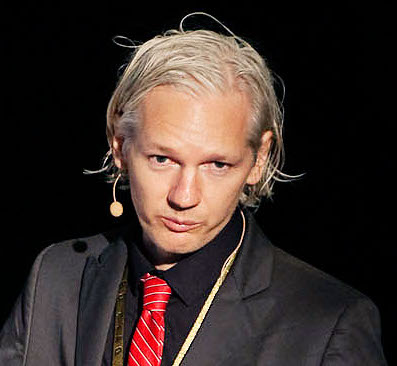

Media Wars
You have read through five wars — surveillance, money, space, consciousness, oil. You’re probably wondering: if all of this is documented, why haven’t I heard about it? This is why. The sixth war is the one operating around you.
The Science
The Architects of Consent
Before there was media control, there was media science. In the 1920s, two men — one the nephew of Sigmund Freud, the other a presidential advisor — designed the intellectual framework for controlling what entire populations believe. They didn’t hide it. They published it.
The Infiltration
What Bernays theorized, the CIA operationalized. By the 1960s, the agency had penetrated the entire American media landscape — not through external pressure, but from inside the newsrooms.
Operation Mockingbird

CIA architect → Director authorization → Media penetration → Blackmail network → Corporate privatization
The Consolidation
Operation Mockingbird required placing individual agents in individual newsrooms. That was expensive and fragile. The consolidation wave of the 1990s solved both problems: instead of infiltrating 50 companies, you only need to control 6.
50 → 6
Corporate consolidation did not stop at the 2024 lineup of six. Following its merger with Paramount Global, Paramount Skydance completed a $110.9 billion acquisition of Warner Bros. Discovery on October 6, 2026 — rebranding the combined entity as Skydance (SKYD) and uniting CBS, CNN, HBO, and Warner Bros. under one corporate roof. Earlier in the year, on January 2–5, 2026, Comcast spun off most of its NBCUniversal cable networks (including CNBC, MSNBC/MS NOW, and USA Network) into an independent publicly traded company, Versant Media Group (VSNT) (Skydance, Comcast Corp., SEC filings).
The Entertainment Machine
The Legalization
For 65 years, federal law barred the domestic dissemination of U.S. government programming produced for foreign audiences. In 2013, buried inside a must-pass defense bill, Congress lifted that domestic distribution ban upon request — while leaving an uneasy statutory firewall on paper.
Smith-Mundt
The agency at the center of the Smith-Mundt debate underwent major upheaval in 2025–2026. A March 2025 executive order sought to dismantle much of the U.S. Agency for Global Media (USAGM) and sharply curtail Voice of America operations. In January 2026, Congress passed bipartisan appropriations restoring hundreds of millions in funding, and in March 2026 a federal court ruled the acting leadership’s mass firings unlawful — leaving USAGM’s scope and future subject to ongoing litigation and oversight (Washington Post, federal court records).
Message Force Multipliers
Dispatch 1035-960
The Platform
Operation Mockingbird put CIA agents in newsrooms. The digital era did something more elegant: it made the newsroom itself — the platform where all information flows — into the intelligence infrastructure. You don’t need to infiltrate the media when the media is built on your architecture.
LifeLog → Facebook
No primary government record proves an operational handoff between DARPA and Mark Zuckerberg’s Harvard launch — DARPA cancelled LifeLog amid public privacy backlash. What the calendar marks is the point where voluntary commercial platforms began assembling, at global scale, the exact life-stream dataset defense planners had tried to build.
The Twitter Files
Following congressional investigations and litigation stemming from the 2020–2022 content-moderation disclosures, the Stanford Internet Observatory (SIO) — co-founder of the Election Integrity Partnership — was effectively dismantled and restructured in June 2024 amid leadership departures and legal costs. In December 2024, the House Judiciary Select Subcommittee on the Weaponization of the Federal Government issued its final staff report concluding its two-year inquiry into government–platform coordination (House Judiciary Committee, Tech Policy Press).
In a striking institutional reversal, Stanford’s Dr. Jay Bhattacharya — placed on Twitter’s internal “trends blacklist” during the pandemic — was confirmed by the U.S. Senate on March 25, 2025 (53–47) as the 18th Director of the National Institutes of Health (NIH), taking office April 1, 2025, and was additionally tapped in early 2026 to serve as acting director of the Centers for Disease Control and Prevention (CDC) (NIH).
Following the Supreme Court’s June 26, 2024 standing ruling and remand to the Western District of Louisiana — and President Trump’s January 20, 2025 executive order barring federal speech-coordination initiatives — the federal government and plaintiff states reached a formal settlement and federal consent decree in March 2026. The decree permanently bars designated federal agencies (including CISA, the CDC, and the Office of the Surgeon General) from using threats of legal, regulatory, or economic retaliation to coerce social media platforms into censoring constitutionally protected speech (Missouri Attorney General, Public Knowledge).
CIA venture capital → Social platform → Data analytics → Signals intelligence → Documented censorship
The Mirror
You have now read through six wars: surveillance, money, space, consciousness, oil, and media. Every single one is documented. Every claim carries its source. Congressional testimony, declassified files, court records, peer-reviewed research. And yet — none of this is common knowledge. That’s not an accident. That’s the sixth war working as designed.
The Cost of Reporting
The deterrent is not limited to Cold War eras or domestic newsrooms. WikiLeaks founder Julian Assange, indicted by the U.S. Department of Justice under the Espionage Act for publishing leaked military and diplomatic records, spent five years in London’s Belmarsh Prison (2019–2024) before securing release in June 2024 through a guilty plea to a single conspiracy count.



Disclosure is not a single event. It’s a process. And it only works if people are paying attention.